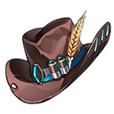
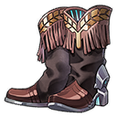

추천 광추
야경 속에서
고속 강화 일반 공격 피해
효과 자세히
치명타 확률 +18%. 전투 속도 100 초과 10마다 일반 공격·스킬 피해 +6%, 필살기 치명타 피해 +12%(최대 6스택).
논검
같은 대상에게 강화 공격 연타
효과 자세히
동일한 적을 여러 회 명중 후 매번 가하는 피해가 16% 증가. 해당 효과 최대 중첩수: 5스택. 공격 목표에 변화가 생길 경우 현재 버프 효과가 해제된다
고민, 그리고 행복
성혼 2 추가 공격에 피해 보너스
효과 자세히
치명타 확률 +18%, 추가 공격 피해 +30%. 추가 공격이 부여한 온순 스택당 아군 치명타 피해 +12%(최대 2스택).
별바다 순항
치명타 확률 보강
효과 자세히
치명타 확률이 16% 증가. 장착한 캐릭터는 HP 백분율이 50% 이하인 적에게 가하는 치명타 확률이 추가로 16% 증가. 장착한 캐릭터는 적을 처치한 후 공격력이 40% 증가. 지속 2턴
그림자처럼 뒤따르는 밤
격파 세팅의 속도·격파 특수효과
효과 자세히
격파 특수효과가 56% 증가. 전투 진입 시 또는 격파 피해를 가한 후 속도가 12% 증가, 지속 2턴, 해당 효과는 턴마다 1회만 발동할 수 있다
추천 유물
밤낮의 경계를 나는 매 4 · 생명의 바커 공 2
- 머리
 주옵션HP부옵션치명타 확률 · 치명타 피해 · 속도 · 공격력%
주옵션HP부옵션치명타 확률 · 치명타 피해 · 속도 · 공격력% - 손
 주옵션공격력부옵션치명타 확률 · 치명타 피해 · 속도 · 공격력%
주옵션공격력부옵션치명타 확률 · 치명타 피해 · 속도 · 공격력% - 몸통
 주옵션치명타 확률 / 치명타 피해부옵션치명타 확률 (주옵션 제외) · 치명타 피해 (주옵션 제외) · 속도 · 공격력%
주옵션치명타 확률 / 치명타 피해부옵션치명타 확률 (주옵션 제외) · 치명타 피해 (주옵션 제외) · 속도 · 공격력% - 다리
 주옵션속도부옵션치명타 확률 · 치명타 피해 · 공격력%
주옵션속도부옵션치명타 확률 · 치명타 피해 · 공격력% - 구체
 주옵션허수 피해 증가부옵션치명타 확률 · 치명타 피해 · 속도 · 공격력%
주옵션허수 피해 증가부옵션치명타 확률 · 치명타 피해 · 속도 · 공격력% - 매듭
 주옵션에너지 회복효율부옵션치명타 확률 · 치명타 피해 · 속도 · 공격력%
주옵션에너지 회복효율부옵션치명타 확률 · 치명타 피해 · 속도 · 공격력%
이 조합을 추천하는 이유
매와 바커공을 사용해 히메코·노바를 지원하는 행동 횟수를 확보합니다.
곤충 재앙을 잠재우는 철기군 4 · 겁화 연등의 연마궁 2
- 머리
 주옵션HP부옵션속도 · 격파 특수효과 · 공격력% · 치명타 확률
주옵션HP부옵션속도 · 격파 특수효과 · 공격력% · 치명타 확률 - 손
 주옵션공격력부옵션속도 · 격파 특수효과 · 공격력% · 치명타 확률
주옵션공격력부옵션속도 · 격파 특수효과 · 공격력% · 치명타 확률 - 몸통
 주옵션공격력%부옵션속도 · 격파 특수효과 · 치명타 확률
주옵션공격력%부옵션속도 · 격파 특수효과 · 치명타 확률 - 다리
 주옵션속도부옵션격파 특수효과 · 공격력% · 치명타 확률
주옵션속도부옵션격파 특수효과 · 공격력% · 치명타 확률 - 구체
 주옵션공격력%부옵션속도 · 격파 특수효과 · 치명타 확률
주옵션공격력%부옵션속도 · 격파 특수효과 · 치명타 확률 - 매듭
 주옵션격파 특수효과부옵션속도 · 공격력% · 치명타 확률
주옵션격파 특수효과부옵션속도 · 공격력% · 치명타 확률
이 조합을 추천하는 이유
철기군 → 격파·슈퍼 격파 방어력 무시 발동에 전투 격파 특수효과 150%/250%. 화염 약점이면 연마궁의 격파 특수효과 +40%.
들이삭과 동행하는 거너 4 · 뭇별 경기장 2
- 머리

주옵션HP부옵션속도 · 치명타 확률 · 치명타 피해 · 공격력% - 손
 주옵션공격력부옵션속도 · 치명타 확률 · 치명타 피해 · 공격력%
주옵션공격력부옵션속도 · 치명타 확률 · 치명타 피해 · 공격력% - 몸통
 주옵션치명타 확률 / 치명타 피해부옵션속도 · 치명타 확률 (주옵션 제외) · 치명타 피해 (주옵션 제외) · 공격력%
주옵션치명타 확률 / 치명타 피해부옵션속도 · 치명타 확률 (주옵션 제외) · 치명타 피해 (주옵션 제외) · 공격력% - 다리

주옵션속도부옵션치명타 확률 · 치명타 피해 · 공격력% - 구체
 주옵션허수 피해 증가부옵션속도 · 치명타 확률 · 치명타 피해 · 공격력%
주옵션허수 피해 증가부옵션속도 · 치명타 확률 · 치명타 피해 · 공격력% - 매듭
 주옵션공격력%부옵션속도 · 치명타 확률 · 치명타 피해
주옵션공격력%부옵션속도 · 치명타 확률 · 치명타 피해
이 조합을 추천하는 이유
거너 → 공격력 +12%, 속도 +6%, 일반 공격 피해 +10%. 경기장 → 전투 치명타 확률 70%에서 일반 공격 피해 +20%.
이 정도면 잘 키웠다
선택한 세팅 기준 · —는 확인된 수치 없음
- 히메코·노바 편성
히메코·노바를 지원하는 공격·행동 세팅입니다.
| 스탯 | 추천 스탯 | 준종결 | 종결 |
|---|---|---|---|
| 속도 | 160+ | — | — |
| 치명타 확률 | 80% | — | — |
| 치명타 피해 | 120% | — | — |
- 달리아 필수
달리아가 포함된 격파 딜러 세팅입니다.
| 스탯 | 추천 스탯 | 준종결 | 종결 |
|---|---|---|---|
| 속도 | 168+ | — | — |
| 격파 특수효과 | 최대한 | — | — |
세팅 기준·출처
4.7 시트의 달리아 필수 편성입니다. Prydwen의 격파 140%+는 사부 성혼 1 강화 제외 권장치입니다. 확인한 자료에 독립적인 준종결 수치가 없습니다.
강화 일반 공격의 공격력과 치명타를 챙깁니다.
| 스탯 | 추천 스탯 | 준종결 | 종결 |
|---|---|---|---|
| 공격력 | 2200 | — | 2400 |
| 속도 | 134 | — | — |
| 치명타 확률 | 90% | — | 100% |
| 치명타 피해 | 80% | — | 100% |
성혼과 추천 돌파
상시 콘텐츠로 성혼을 해금하세요. 성혼 2는 충전 속도를 높이고 성혼 6은 치명타형 강화 공격을 강화합니다.
1사부가 있으면 속도 +10%
필드 위에 사부가 있을 시 Mar. 7th의 속도가 10% 증가
2사부의 일반 공격·스킬 → 추가 공격 및 충전 +1pt추천
사부가 일반 공격 또는 전투 스킬을 발동해 적을 공격할 때마다 Mar. 7th가 즉시 추가 공격을 발동하고, 이번 공격의 주목표에게 Mar. 7th 공격력의 60%만큼 허수 속성 피해를 가하며, 사부의 운명의 길에 따라 상응하는 효과를 발동한 후 충전을 1pt 획득. 공격 가능한 주목표가 없는 경우 랜덤 단일 적을 공격한다. 해당 효과는 턴마다 최대 1회 발동
3전투 스킬 +2 · 일반 공격 +1
전투 스킬 +2 · 일반 공격 +1
4턴 시작 에너지 +5pt
턴 시작 시 에너지를 5pt 회복
5필살기 +2 · 특성 +2
필살기 +2 · 특성 +2
6필살기 다음 강화 일반 공격의 치명타 피해 +50%추천
필살기 발동 후 다음번 강화된 일반 공격이 가하는 치명타 피해가 50% 증가
추천 파티


기본 운영과 행적
기본 운영
치명타 파티에선 자주 공격하는 딜러를 사부로 지정하세요. 격파 파티에선 달리아·갤러거처럼 강인성을 자주 깎는 동료를 사부로 삼아 사부 속성 대응을 활용하세요.
행적 우선순위
일반 공격 > 전투 스킬 = 특성 > 필살기. 강화 일반 공격 뒤 사부를 보조하는 행적을 해금하세요.
아하 속도 계산기 →